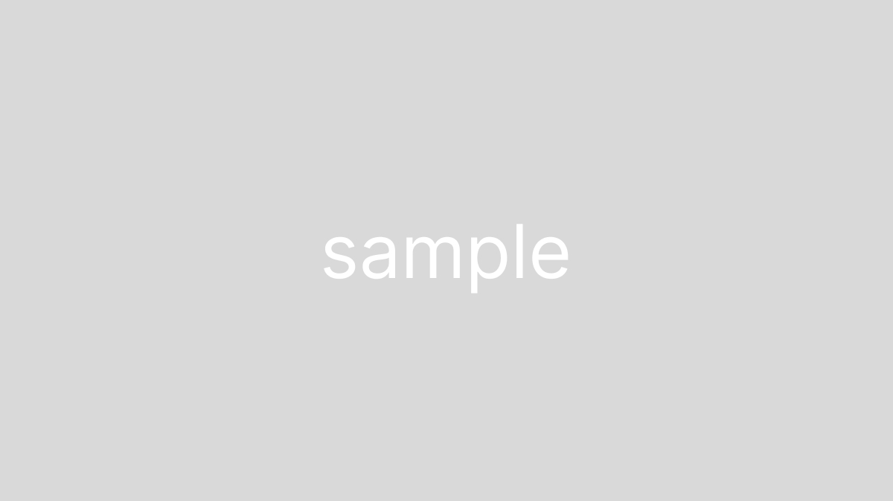

コンビニ名刺王
− スマホアプリから手軽にかんたん名刺プリント！新アプリコンビニ名刺王 −

スマホアプリから手軽にかんたん名刺プリント！
新アプリコンビニ名刺王
こんにちは！
本日は、2024年10月31日にリリースした、写真をフレームに入れて加工できるアプリのご紹介をいたします。
その名も…「コンビニ名刺王」★
スマホに入っている写真やその場で撮影した写真をアプリの中にあるフレームに入れてコンビニでプリントできるサービスです。
[目次]
どんなものが作れるの？

「コンビニ名刺王」は写真をフレームにれて加工する「デザインフレームフォト」と
カレンダーが作れる「カレンダーフォト」の機能があり、簡単にデザインを作成できます♪
種類豊富なデザインフレームで選ぶのも楽しいです☺
ということで、「コンビニ名刺王」の機能を詳しくご紹介していきます！
「デザインフレームフォト」機能
「デザインフレームフォト」は入れたい写真を選んで種類豊富なフレームで写真を加工していきます。
印刷サイズについては、デザインフレームフォトはL判/2L判/スクエア/ハガキの4種類から、用紙はハガキを除き写真紙とシール紙を選ぶことができます。
用紙の質感として、
写真紙とシール紙はツルツル、ハガキはサラッとしていて写真紙やシール紙と比べると光沢感は少ない印象でした♪
ハガキに関しては、オモテ面に郵便番号と切手の枠があらかじめ印字されており、
ハガキ用紙のウラ面にアプリで作ったデザインが印刷されます。（オモテ面への宛名書き印刷機能はありません。）
住所や宛名などを書いて切手を貼ったら、そのままポストへ投函できちゃうんです☺
ぜひ、用途に合わせて選んでみてくださいね！
「カレンダーフォト」機能
「カレンダーフォト」は作りたいシリーズを選び、入れたい写真を選んでカレンダーを作成することができます。
作れるカレンダーは、
- 日常使いに便利なベーシックカレンダー
- 六曜や開運日がわかる開運カレンダー
- 六曜や開運日がわかる開運カレンダー
の3種類から選ぶことができます。
また、カレンダーによっては背景やフォントを選んだり週の開始日を選んだりなど、自分好みにカスタマイズが可能です♪
印刷サイズについては、カレンダーフォトはL判/2L判/スクエア/ハガキ/A4の5種類、
用紙はL判/2L判/スクエアサイズは写真紙とシール紙を選ぶことができます。（※ハガキとA4サイズは1種類のみ）
「カレンダーフォト」機能で選べる1番大きなA4サイズの用紙は光沢紙でこのような感じです。
こちらも用途に合わせて選んでみてくださいね♪
コンビニでプリント
「コンビニ名刺王」で作ったデザインはコンビニ（ローソン・FamilyMart・ミニストップ）のマルチコピー機で印刷が可能です。
アプリのキャビネット内に生成された二次元コードをマルチコピー機のカードリーダー部分にかざし、画面を進めていくと印刷ができます。
おすすめポイント
ここからは「コンビニ名刺王」のおすすめポイントをお伝えしていきます。
①種類豊富なデザインフレーム
アプリ内にあるフレームはとっても種類豊富で、これからも増える予定があるとか...！
さまざまな用途で使えるのが嬉しいですよね！
ぜひ、お気に入りのデザインも見つけてみてくださいね♪
②「カレンダーフォト」機能で目的に合ったカレンダーを簡単に作れる！
お気に入りの写真・画像があれば「こんなカレンダーが欲しかった！」が簡単に作れちゃいます！
写真の配置やカレンダー部分のデザインパターンも複数あり、写真の向きや雰囲気などに合わせて作ることが可能です☺️
③文字入れやデコアイテムでカスタマイズができる！
「コンビニ名刺王」では作成したフレームやカレンダーに文字を入れたりデコ素材を入れることができます。
文字入れはフォントや色、縁など、自分好みに設定することが可能です。
ちょっと物足りないかも？と思ったら文字入れやデコ素材をで装飾してみてくださいね♪
まとめ
さて、ご紹介した「コンビニ名刺王」いかがでしたか？
フレームを選んで、写真を入れるだけでなんて、とっても簡単ですよね♪
今日ご紹介したポイントをまとめておきます。
- フレームやカレンダーを選び好きな写真を入れることでオリジナルのデザインが作れる
- 印刷サイズはL判〜ハガキ、A4サイズまで選べる！（※A4サイズはカレンダーフォトのみ）
- フレームだけではなく文字入れやデコ素材で装飾が可能♪
ぜひ、みなさんも使ってみてくださいね♪